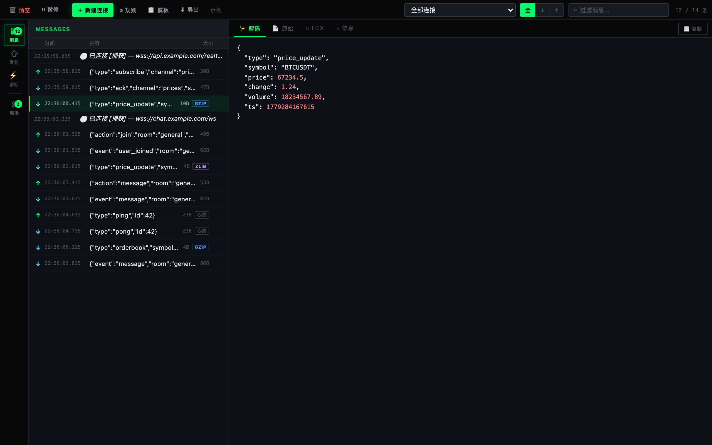
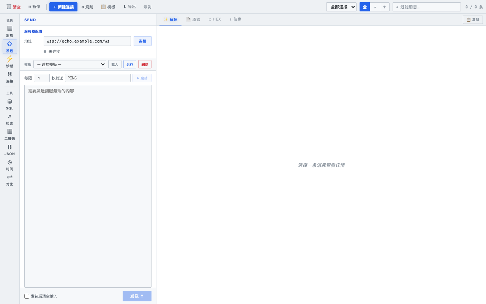
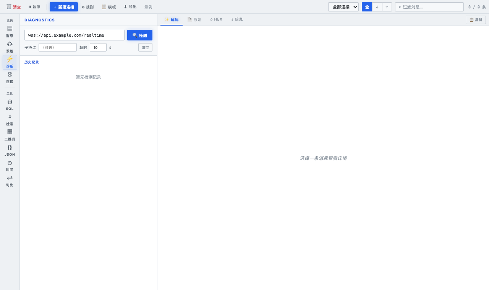
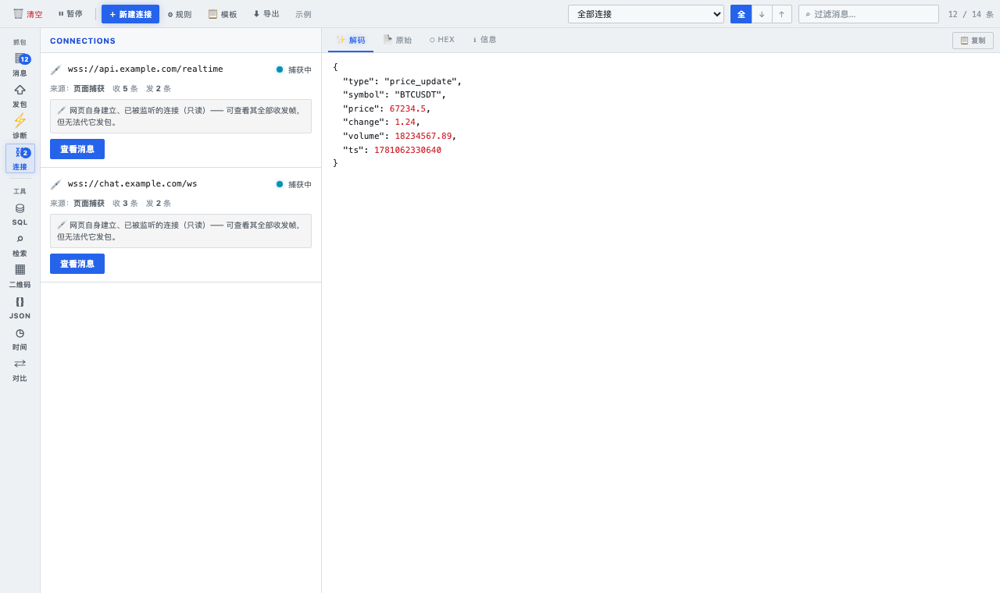
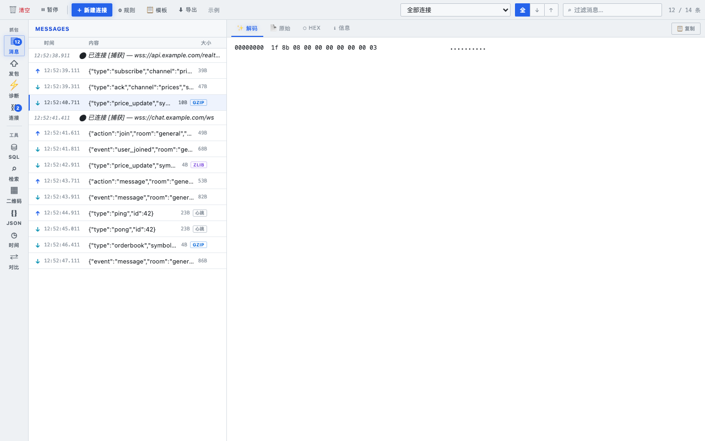

Intercept, inspect and send WebSocket frames directly in Chrome — no proxy, no MITM, no setup. Just install and reload.





Captures every WebSocket connection on the page — including dynamically created ones — the moment you open the panel.
gzip, deflate, deflate-raw — detected by magic bytes, decoded automatically. See the real payload, not the binary blob.
Keys, strings, numbers and booleans each get their own color. With a dedicated Hex view for pure binary frames.
Not sure if an endpoint is reachable? Run a DNS → TLS → handshake check with per-step timing before writing a single line of code.
Open your own ws:// / wss:// connections from the panel. Save payloads as local templates and send them in one click.
Auto-send auth tokens or subscribe messages the moment a connection opens. Color-highlight matching frames by keyword or regex.
↑ / ↓ to move through the message list. ← / → to switch detail tabs. Stay in flow without reaching for the mouse.
No backend, no analytics, no telemetry. Your WebSocket data never leaves the browser. Fully open source.
Dark hacker-theme UI — Three-column layout (icon nav · message list · detail viewer) with a single-row toolbar. Designed for long debugging sessions.
WSS Diagnostics tab — Step-by-step timeline showing DNS resolution, TLS handshake, and WebSocket upgrade with per-step timing and history.
Local send templates — Save, load and delete payload presets inside the Send tab without touching the global template manager.
Keyboard navigation — ↑ / ↓ navigates the message list; ← / → cycles through Decoded · Raw · Hex · Info detail tabs.